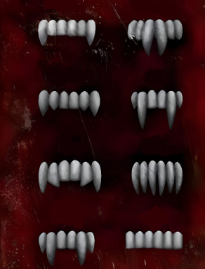

HISTÓRIA
A mitologia dos vampiros é um dos temas mais fascinantes e complexos da cultura popular, com uma rica história que se estende por séculos e atravessa diversas culturas. A origem dos vampiros remonta a tradições e crenças antigas que procuravam explicar fenômenos naturais e experiências inexplicáveis. Para entender a evolução desse mito, precisamos começar com as  raízes mais antigas. A ideia de seres que se alimentam de sangue pode ser rastreada até as antigas civilizações da Mesopotâmia, onde havia crenças em demônios e espíritos que se alimentavam da vida humana. Contudo, os vampiros como os conhecemos hoje começaram a tomar forma na Europa Oriental, especialmente na região dos Bálcãs, onde lendas sobre mortos-vivos eram comuns. Esses seres eram frequentemente descritos como cadáveres que não encontravam descanso e voltavam para consumir o sangue dos vivos. Durante a Idade Média, a crença em vampiros se espalhou pela Europa Ocidental. A Igreja Católica e outras instituições religiosas muitas vezes associavam esses seres a práticas pagãs e heréticas. As histórias de vampiros eram usadas para explicar mortes inexplicáveis e doenças como a tuberculose, que muitas vezes levavam a uma rápida deterioração física. As práticas de exumação de corpos e os métodos para "proteger" os vivos, como o uso de estacas e amuletos, surgiram como uma tentativa de controlar o que era visto como uma ameaça sobrenatural. O mito dos vampiros ganhou uma nova dimensão no século XVIII com o surgimento de textos literários e o impacto das obras de autores como John Polidori e Bram Stoker. O romance "Drácula", de Stoker, publicado em 1897, foi particularmente influente, definindo muitos dos aspectos modernos do vampiro, como a figura sedutora, a vulnerabilidade ao sol e à madeira, e o poder de transformação. No século XX, o vampiro continuou a evoluir na literatura e no cinema, refletindo mudanças culturais e sociais. Filmes clássicos como "Nosferatu" e "Drácula" de 1931, protagonizado por Bela Lugosi, consolidaram a imagem do vampiro como um ser elegante e ameaçador. Nos anos 70 e 80, o gênero se diversificou com a introdução de vampiros anti-heróis e complexos, como em "Entrevista com o Vampiro" de Anne Rice e no filme "The Lost Boys". A partir dos anos 2000, a popularidade dos vampiros explodiu novamente com séries como "Buffy, a Caça-Vampiros" e "Crepúsculo", que apresentaram uma nova geração de vampiros, muitas vezes com características mais humanas e complicadas. Essas histórias tendem a explorar temas de identidade, amor e a busca por redenção, refletindo preocupações contemporâneas. Hoje, os vampiros continuam a ser uma presença proeminente na cultura popular, aparecendo em uma variedade de mídias, desde filmes e séries até literatura e jogos. A figura do vampiro continua a evoluir, incorporando novas ideias e reflexões sobre a natureza humana e a vida após a morte. Em cada época, os vampiros têm servido como um espelho para os medos e desejos da sociedade, mantendo sua relevância e fascínio através dos tempos.